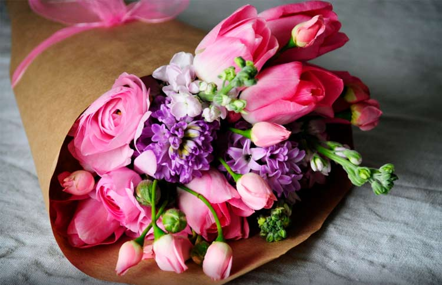
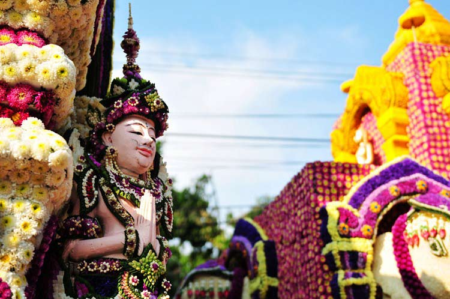
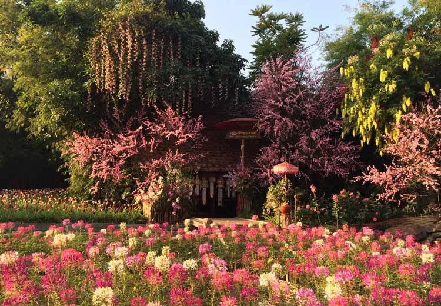

花总是很美的意向，古时候诗人们总喜欢托自己喜欢的或者时下开的正艳的花来表达内心的感情；院落中培植各式花朵，看着它们红的灿烂、白的纯洁、蓝的平静，内心也像铺洒了诸多色彩一样斑斓；节日时的一束鲜花，能把很多埋在心里的话传达给身边的人听，爱慕、感恩或者歉意……
古时候文艺界的诸多大咖都有自己最爱的花，周敦颐喜欢莲花、陶渊明喜欢菊花、杨万里喜欢荷花、陆游爱梅花、杜甫喜欢溪边野花、李商隐喜欢荷花……每种花都有自己盛开的季节：姹紫嫣红的春天菊花悄悄隐去了身形，天高云淡的秋天叩不开梅花紧闭的门扉，银装素裹的寒冬一池荷花凋零殆尽，酷暑难耐的盛夏不见了迎春花的身影。怎么才能看到尽可能多的花呢？
清迈一年分为三个季节，一年当中“三季分明”，独特的气候给数不清的花提供了绝佳的生长条件。鲜花开的最热闹的2月4日到2月6日，清迈会举办花节，世界各地的爱花人士“闻着花的香味就赶来了”。
清迈花节最重要的活动就是各种花的展览，各个地方种植的形态各异的花都在花节期间聚集到了清迈，大有华山论剑、一较高下的架势。除了花卉展览之外，清迈花节还有很多表演项目，诸如花车游行、花船展示和选美比赛等。用花装点的车在清迈的大街小巷穿梭，花车上还载着漂亮的清迈姑娘，美丽的花和美丽的人相映成趣，为花节更添了几分韵味。
清迈有代表着泰北灿烂文化的古老寺庙，也有现代化的高楼、林荫遮蔽的小街；有融合着当地传统文化的建筑、服装，还有各具特色的美食、工艺；它是气候凉爽的著名避暑胜地，也是曾经泰王国的首都，还是风景秀丽、玫瑰芳香的小城。
清迈的几乎每个院落里都开满着鲜花，蓝天、白云映衬下，走在散发着慵懒气息的小巷里，偶遇一位刚下班的泰国金发女郎，点头后给彼此一个微笑。当穿行在鲜花盛开的小巷中，看着干净而安静的小巷，你就会明白清迈为什么会成为邓丽君最喜欢的城市。乍暖还寒的立春时节，喜气洋洋的团圆年，带着家人“开溜”吧，去清迈，遇见一场花事正好！
1、每年2月4——6日是清迈花节，各个地区种植的花都会聚集在清迈进行展览；
2、舒服的温度，美丽的鲜花，闲适的心情……都在清迈等你啦！